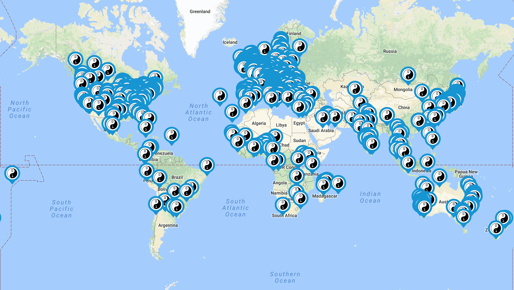

Кто Мы?
СoderDojo – это некоммерческое, не политическое и не религиозное волонтерское движение, которое впервые появилось в 2011 г. в Ирландии. За семь лет обучение в клубах прошли около 1 500 миллиона детей в 1100 клубах, 65 странах мира

CoderDojo @ Ростов-на-Дону - это международный клуб для юных программистов в возрасте от 6 до 17 лет. Преподаватели-волонтеры учат детей писать коды, разрабатывать веб-сайты, писать приложения, программы, игры и узнавать об IT-технологиях в неформальной обстановке.
Программы обучения включают в себя следующие темы:
- SCRATCH — программа для обучения детей основам программирования,
- HTML/CSS – создание и поддержка собственных веб-сайтов,
- JAVA (язык программирования) для создания интернет приложений и программ для Андроидов
- Python (язык) для работы с Raspberry Pi для тех, кто освоил Scratch
- App Inventor или Android Studio для создания приложений для Андроида и планшетов
- Поддержка разработки самостоятельных SOFTWARE или/и HARDWARE проектов детей.
- Проекты могут принимать участие в ежегодном фестивале COOLEST PROJECTS в Дублине.
Занятия проводятся один раз в неделю, по выходным, продолжительность 2-3 часа, ребенку желательно с собой иметь ноутбук — на самом стареньком будет удобней работать, чем на самом новеньком планшете;
также дети до 13 лет должны сопровождаться родителями(или доверенными взрослыми).
Уважаемые родители! Требуется ваша помощь! На данный момент начало обучения откладывается в виду отсутсвия помещения — нужно помещение, пустующее во второй половине какого-либо из выходных дней на 2-3часа и Wi-Fi. Чем раньше найдем помещение, тем интересней и перспективней станет жизнь наших детей (с компьютером);, о возможных вариантах пишем мне elena_popov@hotmail.com и звоним тоже мне)).
Ура! Ура! Ура! Наконец-то у нас есть первое помещение!!! Бескончено Благодарны Директору ООО "Гарант-Сервис-Ростов" Информационно- правового обеспечения "Гарант" Петровой Нине Александровне! И Ольге Петровне Паникаровой - за настояющую дружбу!
Useful resources
- The Beginner Scratch sushi cards have been translated to Russian by Elena Popova. We use these sushi cards to teach children how to program using Scratch.
- Code Maker Buddy is an award-winning web-site created by 11 year-old Benjamin Murray to share information with children who want to learn how to create web sites, mobile applications or games using code or make electronic devices using Ardunio. Benjamin attends CoderDojo @ The Warehouse in Dublin.
ПОДПИСКА НА ИНФОРМАЦИОННУЮ РАССЫЛКУ @ Ростов-на-Дону
Для уведомлений о начале и месте занятий, для бронирования места для ребенка в группе, просьба заполнить нижеследующую форму:
* необходимо заполнить
С уважением
- преподаватель Браин Томас Мэттьюс
- исполняющая обязанности мамы и организатора Попова Елена Ивановна